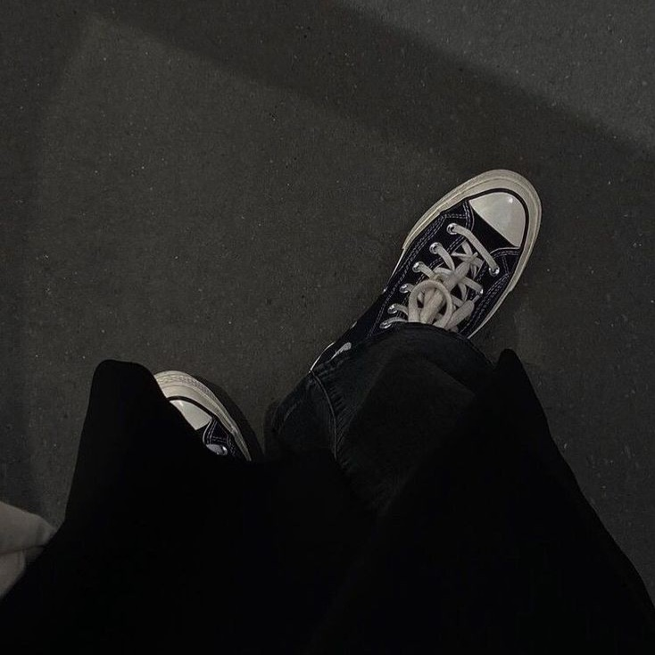
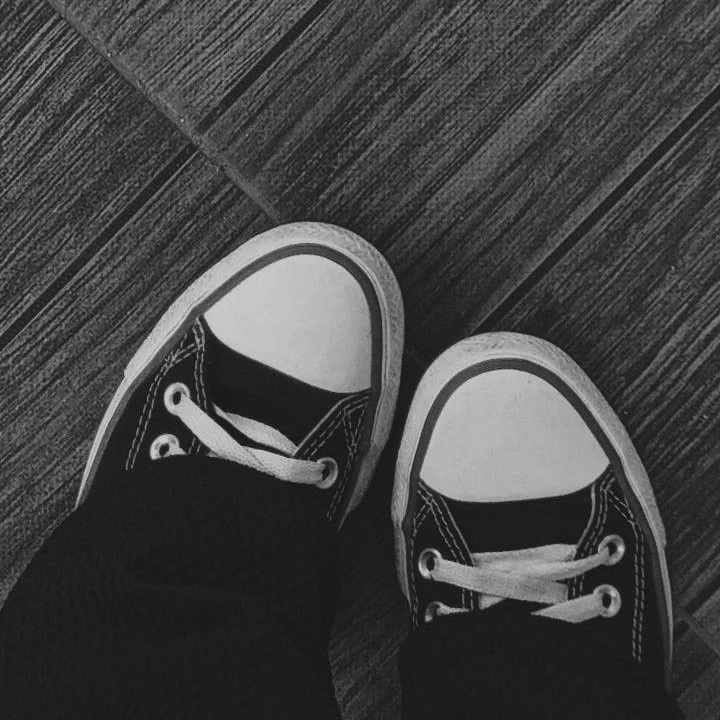

ARTIKEL
Janganlah menganggap remeh hal-hal yang terdekat dengan hati kamu. Rangkullah mereka seperti sama berharganya dengan hidupmu, karena tanpa mereka hidup adalah sia-sia
Berhenti untuk Menyalahkan Segalanya
Tindakan menyalahkan hanya akan membuang waktu. Sebesar apapun kesalahan yang kamu timpakan ke orang lain, dan sebesar apapun kamu menyalahkannya, hal tersebut tidak akan mengubahmu
Sikap menyalahkan orang lain atau sesuatu yang berada di luar kontrol diri adalah sikap yang dapat menghentikan laju kesuksesanmu. Fokus menerima masalah yang ada, berhenti menyalahkan orang lain karena itu tidak akan mengubah dirimu menjadi pribadi yang lebih baik. Menurut Wayne Dyer, usaha mencari pembenaran dalam kehidupan ini adalah sia-sia belaka. Coba berkomitmen untuk mengambil tanggung jawab penuh pada hidupmu dan hadapi setiap masalah yang ada dengan percaya diri.
All blame is a waste of time.
Lakukan Apa yang Membuatmu Bahagia
Jangan tanyakan pada dirimu apa yang dibutuhkan dunia. Bertanyalah apa yang membuatmu hidup, kemudian kerjakan. Karena yang dibutuhkan dunia adalah orang yang antusias
Sadari kekuatan, talenta, dan minat terbaik dalam dirimu dan jangan tergoda untuk mengurusi kelebihan dan kekuatan orang lain. Fokuskan energimu untuk menjadi yang terbaik. Telusuri minat dan lakukan hal-hal yang kamu sukai dengan ikhlas dan terus belajar. Bila perlu tanyakan pendapat orang-orang terdekatmu karena mungkin mereka mengetahui kekuatan yang mungkin tidak kamu sadari.